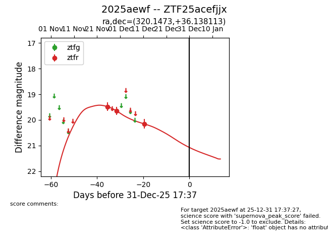
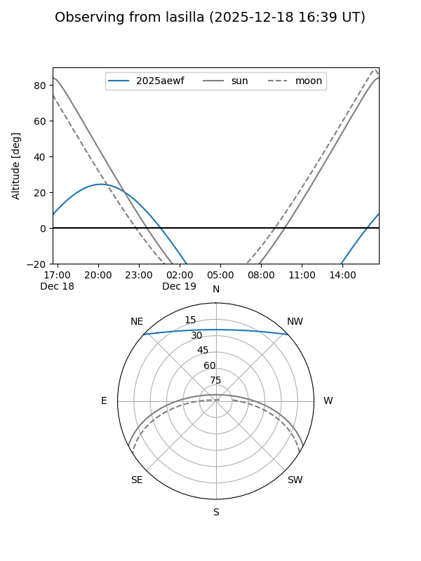
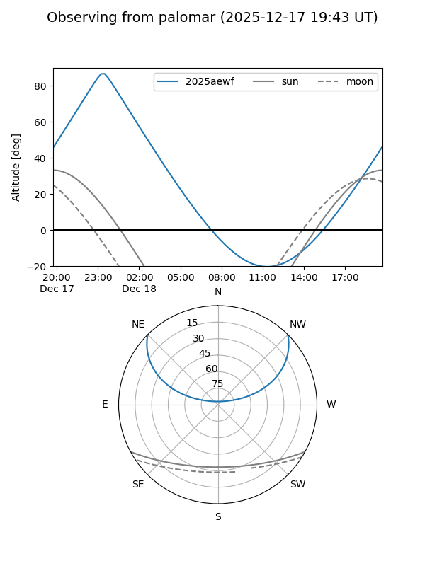
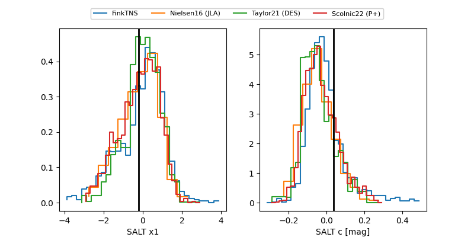

2025aewf
Target 2025aewf at 2025-12-18 11:17
Aliases and brokers:
FINK: fink-portal.org/ZTF25acefjjx
Lasair: lasair-ztf.lsst.ac.uk/objects/ZTF25acefjjx
ALeRCE: alerce.online/object/ZTF25acefjjx
TNS: wis-tns.org/object/2025aewf
YSE: ziggy.ucolick.org/yse/transient_detail/2025aewf
alt names
ZTF25acefjjx (ztf,fink_ztf)
2025aewf (tns,yse)
Coordinates:
equatorial (ra, dec) = 320.1473,+36.13811
equatorial (HMS+DMS) = 21:20:35.36,+36:08:17.21
galactic (l, b) = (82.2677,-9.58587)
Photometry
last ztfr=20.15
3 ztfr detections
Lightcurve

Visibility


Additional plots
